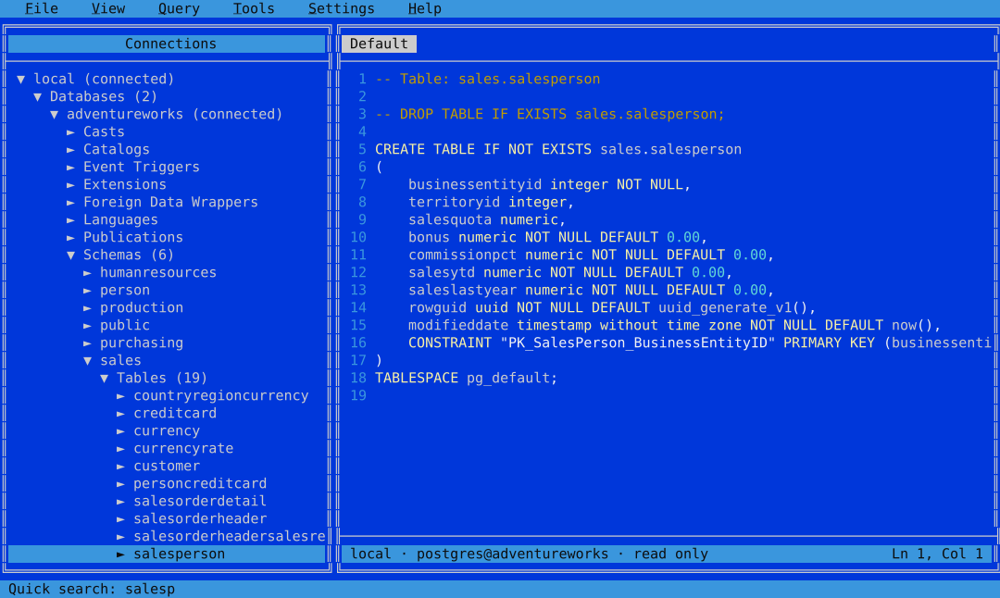

Object tree
The left frame: the saved connections and, below each connected server, its objects, read lazily from the system catalogs.

sales.Moving in the tree
| Key | What it does |
|---|---|
| Right / Left | Expand / collapse. |
| Enter | Toggle. |
| Alt+S or Ctrl+S | Quick search among the loaded rows. |
| Ctrl+F | Find object in the catalogs. |
- Expanding a group runs one catalog query for that group, with the parent OID as bind parameter. A loaded group
shows its count:
Tables (19). - Cluster-wide groups are read through the server session on the maintenance database. Expanding a database opens a session on it ((connected)); collapsing it terminates that session and drops what was loaded below it, so the database can be dropped from a query tab on another database — see The sessions pgtc opens on the server.
- Mouse: right click opens the context menu; drag the border to resize the tree.
What the tree contains
| Below | Groups |
|---|---|
| Server | Databases · Login/Group Roles · Tablespaces |
| Database | Casts · Catalogs · Event Triggers · Extensions · Foreign Data Wrappers · Languages · Publications · Schemas · Subscriptions |
| Schema (and each catalog) | Tables · Views · Materialized Views · Functions · Procedures · Trigger Functions · Sequences · Types · Domains · Aggregates · Collations · Operators · FTS Configurations · FTS Dictionaries · FTS Parsers · FTS Templates · Foreign Tables |
| Table, partition | Columns · Constraints · Indexes · Triggers · Rules · Policies · Partitions (partitioned tables) |
| View | Columns · Rules · Triggers |
| Materialized view | Columns · Indexes |
| Foreign table | Columns |
- Routines are split as in pgAdmin by
prokind: Functions (f), Procedures (p), Aggregates (a); Trigger Functions are functions returningtriggerorevent_trigger. Labels carry the identity arguments. - Tables lists ordinary and partitioned tables that are not partitions themselves. Partitions
(
pg_inherits) are below their parent, schema-qualified when in another schema. - Columns:
attnum > 0, not dropped, as name (type). - A role without
LOGINis marked (group). - Catalogs holds
pg_catalogandinformation_schema; they are never under Schemas.
System objects
Hidden unless → Show system objects in the tree is checked (all servers, saved):
- schemas named
pg_*(pg_toast,pg_temp_N, …); - databases with
datistemplate; - roles named
pg_*; - extension members (
pg_depend.deptype = 'e').
The tree and the Default tab
| Row under the cursor | The Default tab shows |
|---|---|
| An object | Its DDL — see Object view. The query is sent after the cursor has rested 200 ms. |
| A group | The list of its objects. |
| A server | Connection parameters, version and pg_settings — see Connections. |
The context menu of a row
F2 or right click.

customer.| Row | Items |
|---|---|
| Server | Connect · Disconnect │ Refresh · Server dashboard · SQL profiler │ Edit connection… · Delete connection |
| Cluster-wide groups, roles, tablespaces | Refresh |
| Database | New query · Edit in new query tab · Open SQL file… │ Refresh · Server dashboard · SQL profiler · Database statistics │ Export database definition… · Load database definition… |
| Anything inside a database | New query · Edit in new query tab · Select top 100 rows (relations and the rows below them) · Open SQL file… │ Refresh · Server dashboard · SQL profiler |
| Item | Key | What it does |
|---|---|---|
| New query | Ctrl+N | A query tab with a new session on the row's database. |
| Edit in new query tab | Ctrl+E | The shown DDL in a query tab — see Object view. |
| Select top 100 rows | Ctrl+B | See below. |
| Open SQL file… | A SQL file in a query tab on the row's database. | |
| Refresh | Ctrl+R | See below. |
| Server dashboard | Alt+D | Dashboard of the server, or of the database on a database row or below. |
| SQL profiler | Alt+P | Profiler of the server. |
| Database statistics | Alt+I | Statistics of the database. |
| Export / Load database definition… | See Database definition. |
F3 (in no menu) opens the object in its own tab. Commands that need a database session are disabled outside a database of a connected server.
Refresh
The tree is a cache; it does not follow DDL, from pgtc or any other session.
- Ctrl+R re-reads everything loaded below the selected row; surviving rows stay expanded. On a server
row it also re-reads
pg_settings. - From elsewhere: .
- It also drops the autocomplete name cache of the query tabs.
Quick search (Alt+S)

salesp.A client-side, case-insensitive prefix match among the rows already in the tree, as in Midnight Commander; no query is sent, so unloaded groups are not searched. Alt+S again jumps to the next match; Enter, Esc or an arrow ends the search.
Find object (Ctrl+F)
An ILIKE match on object names in the catalogs, with the text as bind parameter, scoped to
everything below the selected row. Enter on a result expands the tree down to that object. Also
.

territory below adventureworks, columns included.| Field | Meaning |
|---|---|
| Name | Sent 200 ms after the last key. % and _ are escaped. Up / Down move in the list while the focus stays here. |
| Match | Contains (default), Starts with, Ends with. |
| Show columns | Off by default; when on, columns are listed last as table.column. |
- List: ordered by type as in the tree, then by name; sub-objects with their relation, routines with argument types. At most 200 rows (200+ objects — type more to narrow the search).
- Scope: a server row searches every database; a group only objects of that kind; a table or view its columns (if checked), indexes, constraints, triggers, rules, policies, partitions; a leaf row nothing.
- Whole server: each database is searched through its own session, concurrently, at most 8 at a time, closed with the dialog (1 of 20 databases). A database that cannot be connected to is skipped and named (not searched: db3 (password needed)).
- System objects only when Show system objects is on.
- Not found: casts, operators, full-text search objects, subscriptions.
In the editor and in a definition, Ctrl+F is Find / replace.
Select top 100 rows (Ctrl+B)
On a table, view, materialized view, foreign table or partition, or any row below one: opens a query tab with
SELECT * FROM sales.customer LIMIT 100;and executes it. No ORDER BY; the name is schema-qualified and quoted. Also
.
Tabs opened from the tree
| Key | On | Opens |
|---|---|---|
| F3 | Any row | Its own object tab. |
| Ctrl+N | A database or below | A query tab. |
| Ctrl+E | An object in a database | Its DDL in a query tab. |
| Ctrl+B | A relation or below | SELECT * … LIMIT 100, executed. |
| Alt+D (Ctrl+D) | A server, a database or below | Server dashboard. |
| Alt+P (Ctrl+P) | A server or a database | SQL profiler. |
| Alt+I | A database | Database statistics. |